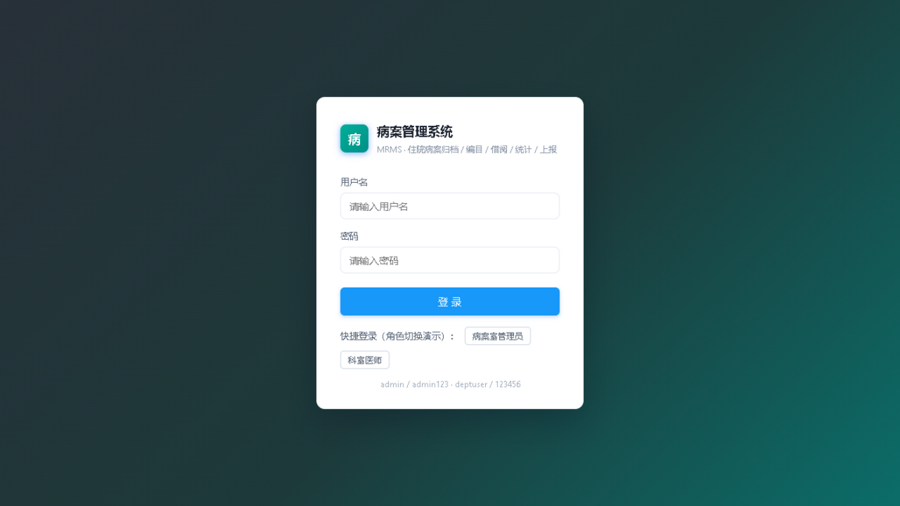
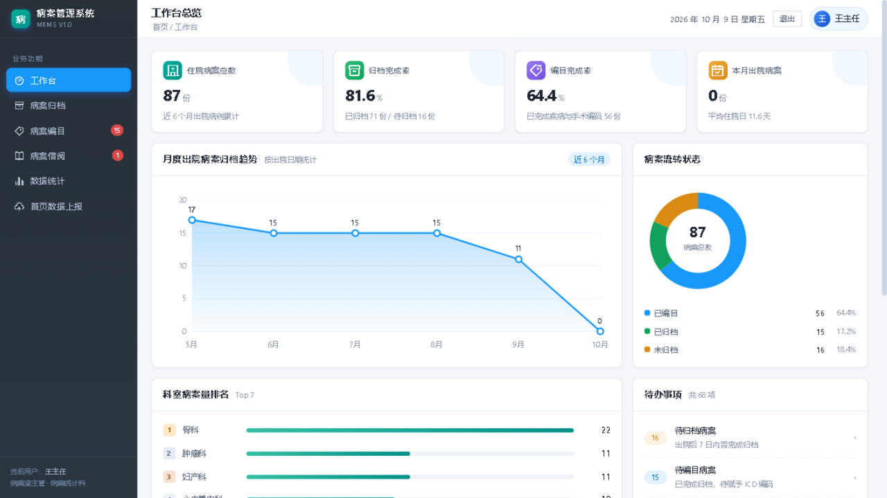
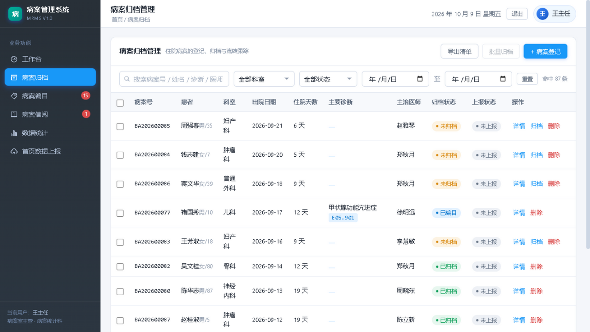
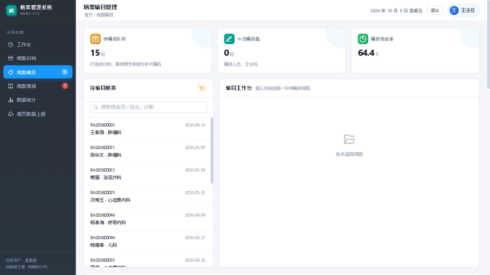
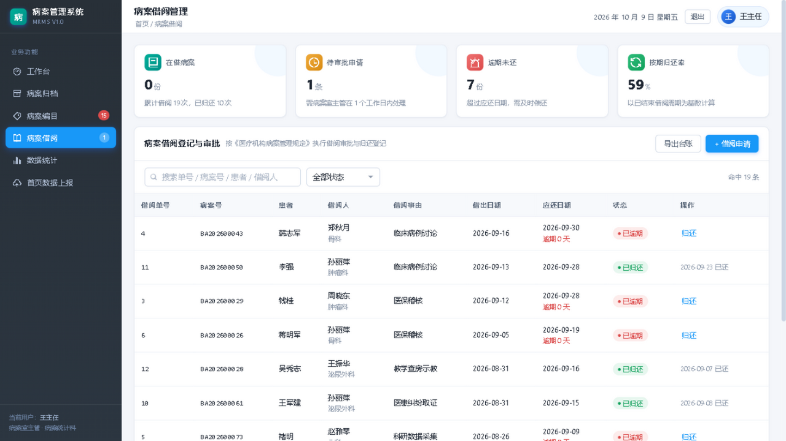
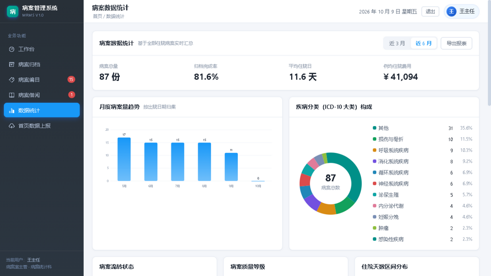
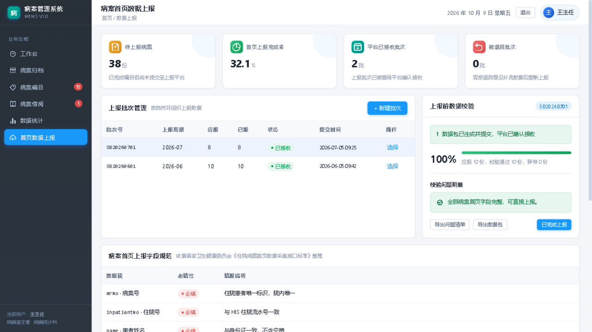
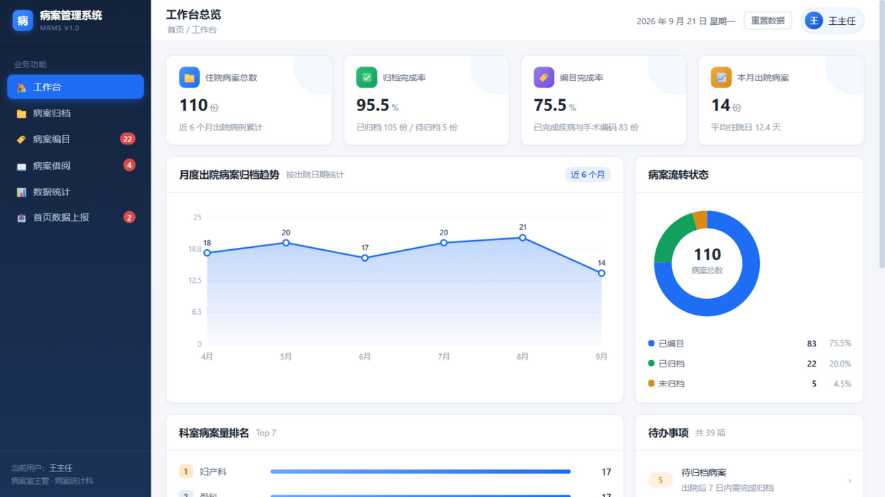

文档定位：答辩汇报用系统规格说明。面向评审与技术交接，重点呈现「参考了什么 → 设计成什么样 → 实现到什么程度 → 如何验证」。 交付形态：WebUI 单页应用（浏览器访问）+ Go 后端服务 + PostgreSQL 数据库。 文档版本：V1.0 ｜ 编制日期：2026-09-22 ｜ 配套文档：
DESIGN.md（架构设计）、prototype/BASELINE.md（原型基线）、mrs-backend/docs/API.md（接口契约）
编号 P = 项目内参考源，E = 外部参考源。核实状态：[已核实] = 直接抓取/读取源文件；[检索核实] = 联网检索返回摘要。
| 编号 | 名称 | 来源 | 核实 |
|---|---|---|---|
| P1 | 项目题目（需求方原文） | "9. 病案管理系统——管理住院病案的归档、编目、借阅和统计，支持病案首页数据的上报。" | 已核实 |
| P2 | 《病案管理系统调研工作规划（12 节标准版）》V1.0，2026-09-18 | 需求方交付 docx（12 节功能主题 + 5 阶段调研部署 + 4 条质量控制要求） | 已核实（解析全文） |
| P3 | 病案管理系统骨架设计 V2.1 | DESIGN.md（需求域、三条状态机、表结构、技术栈） |
已核实 |
| P4 | 项目说明 | README.md（启动方式、种子数据规模） |
已核实 |
| P5 | 原型基线冻结记录 | prototype/BASELINE.md（D1–D10 决策、全局不做清单） |
已核实 |
| P6 | 接口契约 | mrs-backend/docs/API.md（71 条路由、状态枚举、菜单对照） |
已核实 |
| P7 | 配色实测脚本 | prototype/xiayi_palette.py（像素采样 + 布局测量） |
已核实 |
| P8 | 参考实现实拍图 | prototype/reference/xiayi-workstation.jpg、xiayi-print.jpg |
已核实 |
| P9 | 配色对齐层 | frontend/css/theme-xiayi.css（实测色值落地） |
已核实 |
| P10 | 原型逐屏决策页 | prototype/review.html（六屏实拍 + 逐屏判定 + 决策点） |
已核实 |
| 编号 | 名称 | 来源 | 类型 | 核实 |
|---|---|---|---|---|
| E1 | 侠医《数字化病案管理系统》（DMRMS） | https://www.ixiayi.net/dmrms.htm | 厂商产品（视觉基准） | 已核实（逐页抓取） |
| E2 | 今创科技 病案管理系统 / 首页质控 / DRG 预分组 | http://www.shcreating.com ；http://www.300290.com | 厂商产品（功能对标） | 检索核实 |
| E3 | 易通云科 病案示踪 / 智慧病案 | http://www.scbagl.com | 厂商产品（流转追溯对标） | 检索核实 |
| E4 | HQMS 国家医院质量监测系统 | http://www.hqms.org.cn | 标准/平台（上报机制） | 检索核实 |
| E5 | 《住院病案首页数据采集质量与接口标准（2020 年版）》 | 依据国卫办医政函〔2025〕14 号 | 标准（上报字段与一级质控） | 检索核实 |
| E6 | 《住院病案首页数据填写质量规范（暂行）》+《首页数据质量管理与控制指标（2016 版）》国卫办医发〔2016〕24 号 | https://www.nhc.gov.cn/wjw/c100175/201606/b41dfe1ef9f04156aa298d3e9b815d18.shtml | 规范（质控规则依据） | 检索核实 |
| E7 | 《医疗机构病历管理规定（2013 年版）》国卫医发〔2013〕31 号 | https://www.nhc.gov.cn/wjw/c100175/201312/0430f5400b4e482b9a4d766f16ce1b55.shtml | 法规（借阅/复印/封存） | 检索核实 |
| E8 | 《住院病案首页》（卫医政发〔2011〕84 号）及填写说明 | 2016 版规范的制定基础 | 规范（字段来源） | 检索核实 |
| E9 | 《电子病历应用管理规范（试行）》国卫办医发〔2017〕8 号 | 2017 年印发 | 规范（封存与审计） | 检索核实 |
| E10 | 专利 CN105844566A《一种电子病历归档管理系统及方法》（东华软件） | https://patents.google.com/patent/CN105844566A/zh | 专利（归档流程） | 检索核实 |
引用说明：E4–E10 为检索返回摘要，关键条款定稿前建议抽验原文；E5 具体字段以官方正式发布文档为准（与调研文档质量控制第 2 条一致：禁止以口头需求作为设计依据）。
管理住院病案的归档、编目、借阅和统计，支持病案首页数据的上报。
系统覆盖住院病案从出院回收到首页数据上报的完整生命周期，为病案室提供归档作业、ICD 编码、借阅监管、统计分析与上报质控的一体化工具，并满足《医疗机构病历管理规定》对借阅留痕、封存冻结、操作审计的合规要求。
| 层 | 形态 | 访问方式 |
|---|---|---|
| 界面 | WebUI 单页应用（Vue 3，零构建、零第三方依赖） | 浏览器访问，登录后进入 |
| 服务 | Go 单体服务（Gin + GORM） | HTTP API + 静态资源 |
| 数据 | PostgreSQL 16（主库）+ Redis（热点缓存，可降级） | — |
| 部署 | Docker Compose 三容器 / 本地免 Docker 双轨 | 一键启动 |
| # | 功能域 | 核心能力 | 对应调研节 |
|---|---|---|---|
| 1 | 登录与权限 | JWT 认证、角色分级（病案管理员 / 科室医师）、操作审计 | 节 2、10 |
| 2 | 病案归档 | 病案登记、批量回收、归档上架（架位容量校验）、封存、流转履历 | 节 3 |
| 3 | 病案编目 | 待编目队列、ICD-10/ICD-9-CM-3 选码、编码存在性校验、质量分级 | 节 4 |
| 4 | 病案借阅 | 申请 → 多级审批 → 借出 → 归还核销、续借、逾期催还、台账追溯 | 节 5、6 |
| 5 | 数据统计 | 状态分布、归档率、疾病谱、科室排名、费用与住院日分布 | 节 7 |
| 6 | 首页质控 | 三类规则校验（必填/逻辑/编码存在性）、逐字段异常标记、修正确认 | 节 8 |
| 7 | 首页上报 | 批次管理、上报前校验、XML 组包、回执状态、失败排查 | 节 9 |
| 8 | 基础数据 | 科室、医师、ICD 编码库（版本化）、架位、通用字典 | 节 11 |
| 9 | 合规安全 | 操作日志审计、数据权限范围、病案禁删、封存冻结 | 节 12 |
需求来自题目四域 + 调研文档 12 节（P1/P2）。调研文档按「每节 3 分钟讲解」的课件颗粒度规划了 12 个主题，本系统将它们归并为 8 个功能域 + 6 个界面模块，菜单顺序与课件顺序一致（便于边开发边录课）：
| 调研节 | 主题 | 归入功能域 |
|---|---|---|
| 1 | 系统定位与业务价值 | 汇报开篇 |
| 2 | 系统基础操作 | 登录与权限 |
| 3 | 病案归档管理 | 归档 |
| 4 | 病案编目管理 | 编目 |
| 5 | 病案借阅申请与审批 | 借阅（申请审批） |
| 6 | 病案借阅台账管理 | 借阅（台账） |
| 7 | 病案统计分析 | 统计 |
| 8 | 病案首页数据质控 | 首页质控 |
| 9 | 病案首页上报操作 | 首页上报 |
| 10 | 用户与权限配置 | 登录与权限 / 基础数据 |
| 11 | 基础数据维护 | 基础数据 |
| 12 | 合规要求与常见问题 | 合规安全 |
系统以状态机为骨架，所有业务动作都是对状态的受控流转，这既保证业务正确性（不可跳步、不可逆序），又天然形成审计轨迹。
批量回收 首条编目 归档上架
未回收 ──────────→ 已回收 ──────────→ 已编目 ──────────→ 已归档(在架)
NOT_RECYCLED RECYCLED CATALOGED ARCHIVED
│ ↑
借出 ↓ │ │ 归还
借出 BORROWED
│
封存 ↓ │
封存 SEALED（终态）
| 取值 | 中文 | 进入条件 | 代码位置 |
|---|---|---|---|
NOT_RECYCLED |
未回收 | 病案登记（初态） | — |
RECYCLED |
已回收（待编目） | 批量回收 | handler/archive.go |
CATALOGED |
已编目 | 首条编目录入 | handler/catalog.go |
ARCHIVED |
已归档（在架） | 归档上架（绑定架位） | handler/archive.go |
BORROWED |
借出 | 借出操作 | handler/borrow.go |
SEALED |
封存 | 封存（仅从在架） | handler/archive.go |
流转均采用条件更新（WHERE status = 期望前态），并发下天然防重、防跳步。
申请(可加急) → 审批中 ──逐级通过──→ 已批准 → 借出 → 归还核销
APPLYING APPROVED BORROWED RETURNED
│ │
└──任一级驳回→ 已驳回 REJECTED └──超期→ 逾期 OVERDUE（定时任务标记+催还记录）
config.yaml borrow.approve_levels），逐级落库 borrow_approval，全部通过才置「已批准」，任一级驳回即终止。borrow_reminder）。草稿 → 待质控 → 质控通过（可上报） → 已上报（终态）
│ ↑
└→ 质控退回 ─┘ 修正后重新质控
WAIT_QC QC_REJECTED →（修正保存）→ WAIT_QC
REQUIRED 必填校验 — 患者姓名、入出院时间、主要诊断编码等LOGIC 逻辑校验 — 出院时间晚于入院时间、住院天数大于 0CODE_EXIST 编码存在性 — 诊断编码须存在于 ICD-10 字典、手术编码须存在于 ICD-9-CM-3 字典qc_rule 表（8 条种子规则），不硬编码，便于按院方规则清单扩展。front_page_qc_result（字段名 / 错误级别 / 描述 / 是否已修正），支持修正后重审闭环。PENDING → SUCCESS / FAILED / PARTIAL；明细回执 WAITING → SUCCESS / FAIL 留痕，供失败排查。| 能力 | 说明 |
|---|---|
| 登录 / JWT 认证 / 角色区分 | admin 与 deptuser 双角色，ADMIN 操作受后端拦截 |
| 病案登记、查询、修改 | 支持 ICD 选码联动 |
| 批量回收、归档上架 | 架位行锁 + 容量校验，自动截断超量 |
| 编目（诊断 + 手术选码） | 编码须命中字典，首条编目自动推进状态 |
| 首页质控执行 + 异常落库 | 编目动作链内自动触发 |
| 质控通过自动上架 | 自动选择有空位的架位 |
| 借阅申请 / 审批 / 借出 / 归还 / 续借 | 全链路含并发防护 |
| 借阅台账 + 逾期视角 | 前端动态计算逾期天数并标红 |
| 上报批次创建 / 提交 / 回执 / 状态回写 | 本地 XML 桩，防腐层可替换 |
| 统计（状态 / 归档率 / 疾病谱 / 趋势） | 后端 4 接口 + 前端内存聚合 |
| 操作日志审计与展示 | 写操作自动落库，工作台展示动态 |
| ICD 编码检索（Redis 加速） | 缓存不可用自动降级直查 |
架位管理 CRUD、病案封存、归档流转履历、借阅审批链追溯、人工催还、首页质控独立工作台、编码库整版导入、系统管理全部 CRUD（科室/医师/字典/角色/用户）、用户改密、统计报表服务端导出。
说明：其中「封存 / 架位 / 日志界面」为原型基线（P5）明确决策的「仅 API」；系统管理 CRUD 后端完备但前端未建页，是后端能力超出前端最集中处，列为后续优先项。
| 事项 | 理由 |
|---|---|
| DRG/DIP 预分组 | 属医保控费范畴，超出课程范围（今创等厂商核心卖点） |
| 无纸化病案 / HIS-EMR 自动采集 | 不接院内临床系统，首页数据由本系统维护 |
| 条码 / RFID 病案示踪 | 仅留架位与流转流水，不做硬件示踪 |
| 服务端分页 | 前端全量加载 + 内存分页（演示规模 ≤ 数百条） |
| 病案复印服务界面 | 真实系统标配，本期仅留 API 位 |
| 工位式三栏布局 | 仅对齐参考实现的色板，布局维持卡片式 |
共 20 张表，按域划分：
| 域 | 表 | 说明 |
|---|---|---|
| 病案域（9） | med_record |
病案主档（全系统锚点，承载主状态机） |
med_record_front_page |
病案首页（规范字段 + 扩展 JSON，承载首页子状态机） | |
front_page_qc_result |
质控结果（逐字段异常标记） | |
qc_rule |
质控规则配置（必填/逻辑/编码存在性） | |
archive_record |
归档流水（回收/上架/封存留痕） | |
shelf |
架位（容量与占用） | |
catalog_entry |
编目记录（一病案多诊断/手术） | |
icd_dict / icd_dict_version |
ICD 编码库 + 版本记录（支持整版换版） | |
| 借阅域（3） | borrow_order |
借阅单（承载借阅子状态机，含加急标志） |
borrow_approval |
审批记录（多级审批链） | |
borrow_reminder |
催还记录 | |
| 上报域（2） | report_batch / report_item |
上报批次 + 明细回执 |
| 系统域（6） | sys_user / sys_role / sys_dept / sys_doctor / sys_dict / oper_log |
用户、角色（含数据权限）、科室、医师、字典、操作审计 |
接口总量：约 71 条路由，统一响应 {code, msg, data}，权限三档（公开 / 登录 / ADMIN）。完整清单见 mrs-backend/docs/API.md。
本章为答辩重点：先讲参考基准，再逐屏展示我们的 WebUI，最后给出视觉对标成果。
选择理由：该产品是病案管理领域的成熟商业系统（P8/E1），其界面直接体现病案室真实作业场景，比通用后台模板更具行业说服力。
题注：侠医 DMRMS 的扫描加工工位，以「左树—中图—右信息」三栏布局承载病案数字化流程。本图仅作设计对标参考，非本项目产物。
我们没有"看着像"就调色，而是用脚本（P7）对参考截图逐像素采样，测出精确色值后再落地：
| 语义 | 参考实现实测值 | 用途 | 本项目是否采用 |
|---|---|---|---|
| 交互蓝 | #1898f8 |
激活菜单、主按钮、序列首色 | ✅ 采用（替换原 #1d6ef5） |
| 品牌青 | #009088（渐变端 #00b09a） |
品牌标识、进度条、排名条 | ✅ 采用 |
| 强调橙 | #f85020 |
完成类动作按钮 | ➖ 未采用（原有语义色已够用，避免过冲） |
| 深炭侧栏 | #283038 |
主导航底色 | ✅ 采用（替换原深蓝渐变） |
| 定位绿 | #00f800 |
扫描仪实时定位框 | ➖ 功能色，属硬件工位，不并入主题 |
对标后实测回验（应用配色后用同一脚本回测我们的界面）：激活导航项实测 #1898f8 与目标零偏差，侧栏实测 #2a333d ≈ 目标 #283038，logo 主色 #00a090 落在青绿渐变域内——实测 → 应用 → 回测，全部命中。
参考实现的工位式三栏布局（窄侧栏 + 密集工具栏）服务于扫描硬件作业场景；本系统面向管理视角，因此仅移植配色体系，布局维持卡片式信息架构（原型决策 D9/D10）。这一取舍在答辩中说明为「取其视觉语言，保其信息密度」。
菜单结构（6 个业务模块 + 登录，顺序对齐调研 12 节课件）：
登录 → 工作台 → 病案归档 → 病案编目 → 病案借阅 → 数据统计 → 首页数据上报
设计语言要点：
以下 7 屏均为真实数据联调截图（后端 PostgreSQL 实库），侧栏高亮已逐屏程序化校验与页面一致。

题注：登录页以品牌青渐变背景承载登录卡，并内置「病案室管理员 / 科室医师」双角色快捷入口——一屏说明系统的权限演示路径（对应调研节 2/10）。
登录后取得 JWT（存 sessionStorage），所有请求自动携带；token 失效或权限不足时，后端返回 401/403，前端提示「无权限执行该操作（需要病案室管理员）」，权限判断全部在后端，前端只做呈现。

题注：工作台一屏汇总「住院病案总数—归档完成率—编目完成率—本月出院」四项核心指标，配月度归档趋势与流转状态环形图，右侧科室排名与待办中心并列——体现系统「先看板、后作业」的设计取向。
四项 KPI 分别回答："总量多少 / 归档进度如何 / 编码进度如何 / 本月出院量"。流转环形图让病案在各状态间的分布一目了然；右下待办中心按「待归档 / 待编目 / 待审批借阅 / 逾期未还」聚合，点击直达对应模块。

题注：归档列表以「筛选条 + 双状态列 + 行内操作」组织全院病案，归档状态与上报状态并列呈现，配合批量归档与详情抽屉，支撑病案室日常回收与上架作业（对应调研节 3）。
设计要点： - 双状态列：归档链（未归档/已归档/已编目）与上报链（未上报/待上报/已上报）分列，避免信息混淆 - 批量操作：勾选后一键批量归档，写入同一批次号的归档流水 - 合规约束：删除按钮禁用并提示「病案依法不得删除」（依据《医疗机构病历管理规定》） - 导出：一键导出当前筛选结果 CSV

题注：编目页采用「左队列—右工作台」主从布局：左侧滚动列出待编目病案，右侧为空态引导。ICD 编码经关键字检索选入，编码须命中字典库方可提交（对应调研节 4）。
这是系统的核心作业页，一个「提交编目」按钮背后串联了四个真实动作：
选码提交 → 写入编目记录（诊断 + 手术）
→ 保存病案首页数据
→ 自动执行质控（三类规则）
→ 若质控通过，自动选择空架位完成上架
同时按质控结果自动推导质量等级：无异常=甲级、仅警告=乙级、有错误=丙级。这使「编目」不再是一次孤立录入，而是驱动病案状态推进 + 质控 + 上架的作业中枢。

题注：借阅页以「在借 / 待审批 / 逾期未还 / 按期归还率」四项指标监控借阅健康度，台账明细逐单记录借阅事由、借出与应还日期、审批人，逾期单自动标红并可直接催办（对应调研节 5、6）。
设计要点： - 事由留痕：借阅事由为下拉枚举（临床病例讨论 / 医疗质量检查 / 科研数据采集 / 医患纠纷取证等 7 类），符合管理规定对借阅目的的记录要求 - 逾期监控：逾期天数由前端实时计算（不依赖定时任务刷新），超期即标红 - 操作闭环：待审批单可「通过 / 驳回」，在借单可「归还 / 续借」，状态流转即时反映 - 台账导出：一键导出借阅台账 CSV，供管理检查

题注：统计页以「指标横条 + 月度柱状趋势 + 疾病分类环形构成」三段式呈现：病案总量、归档率、平均住院日、例均费用一目了然，下方按 ICD-10 大类给出疾病谱构成（对应调研节 7）。
底部另有「病案流转状态 / 病案质量等级 / 住院天数区间分布」三张分析卡，支持近 3 月 / 近 6 月切换与 CSV 导出。

题注：上报页三段并列——左侧按自然月管理上报批次（待上报/已接收/已退回），中部展示上报前校验结果（通过率与问题清单），底部附首页上报字段规范说明，体现「先校验、后上报」的合规流程（对应调研节 8、9）。
设计要点： - 批次化管理：按自然月组织，批次状态含「待上报 / 已接收 / 已退回」，被退回批次给出原因 - 上报前校验：校验面板展示后端质控结果（应报数 / 通过数 / 异常明细），问题清单可导出，未通过不允许上报 - 字段规范对照：页面底部直接列出上报字段的必填性与填报说明，依据国家卫健委《住院病案首页数据采集接口标准》 - 防腐层设计：上报通道以接口抽象，当前为本地 XML 落盘桩，官方接口文档到位后替换实现即可，业务代码不动
配色从基线到参考实现的对标，可通过同一页面的两套配色并置直观呈现：
| 基线配色（初始） | 对标配色（当前） |
|---|---|
 |
 |
深蓝侧栏 #172C4C、强调色 #1D6EF5 |
炭灰侧栏 #283038、交互蓝 #1898f8、品牌青 #009088 |
题注：左为初始基线（深蓝体系），右为按参考实现实测色值调整后（炭灰 + 交互蓝 + 品牌青）。两图信息架构完全一致，仅配色不同——说明视觉对标是"换肤"而非结构改造。
| 层 | 选型 | 说明 |
|---|---|---|
| 后端 | Go + Gin | 单二进制、无运行时依赖，启动快 |
| ORM | GORM（PostgreSQL 驱动） | 实体即表结构，AutoMigrate 补列 |
| 数据库 | PostgreSQL 16 | 强类型、约束完善；容器或便携版双轨 |
| 缓存 | Redis | ICD 检索、统计热点；连不上自动降级直查，不阻塞业务 |
| 认证 | JWT（HS256）+ bcrypt | 密码字段永不序列化下发 |
| 定时任务 | 进程内 Ticker | 逾期扫描，启动即扫一次 |
| 前端 | Vue 3（全局构建）+ 手写 SVG 图表 | 零第三方依赖、零构建步骤 |
| 前端数据层 | REST 适配层（api-store.js） |
导出同构 MRMS 接口，页面组件零改动接入真后端 |
| 部署 | Docker Compose | postgres + redis + backend 三容器 |
技术选型的三条取舍：
形态一：Docker Compose（推荐）
docker compose up -d --build
→ postgres 容器首次执行建表 SQL
→ 后端 AutoMigrate 补差 + 空库自动灌种子
→ Redis 就绪 → 路由挂载 → 逾期扫描器启动
→ 服务 http://localhost:8080
形态二：本地免 Docker（免管理员权限）
便携版 PostgreSQL（tools/pg，免安装）
→ 建库工具跑一次
→ go run . 启动后端
→ 静态服务器托管前端
WSL2 + Ubuntu 24.04 环境亦已就绪（虚拟机平台已启用、发行版已安装并配置好用户/免密 sudo/国内镜像源），可在其中运行 Docker 部署形态。
前端页面组件与后端完全解耦，通过一个适配层（js/api-store.js）完成三件事：
RECYCLED → 已归档），界面词汇与参考实现保持一致这一层的价值：参考实现的前端界面几乎没有改动就接上了真实后端，从"演示原型"变为"可用系统"。
在真实数据库上完整走通业务闭环，并留取截图作为证据：
| 验证项 | 方法 | 结果 |
|---|---|---|
| 登录与角色 | admin 快捷登录 → 取得 JWT → 拉取全量数据 | ✅ |
| 六模块真数据渲染 | 逐屏截图，数据来自 PostgreSQL 实库（87 份病案、19 张借阅单、2 个上报批次） | ✅ |
| 侧栏高亮一致性 | 逐项点击导航，程序化读取 DOM 中的高亮项与页面标题比对 | ✅ 六项全对 |
| 写路径落库 | 点「通过」审批借阅 → API 复查病案状态已变 BORROWED，操作日志留痕 |
✅ |
| 逾期自动化 | 定时任务启动即扫描，超期借阅单自动置逾期并写催还记录 | ✅ |
| 数据一致性 | 借出中的病案数与在借单数配对校验（7 = 7），状态映射无冲突 | ✅ |
| 配色对标回验 | 像素脚本回测渲染结果，交互蓝零偏差、侧栏与品牌青落域内 | ✅ |
| 静态检查 | go build / go vet / go test 全绿 |
✅ |
真实数据下的发现（如实记录）：联调截图显示部分病案「主要诊断」为空、疾病分类环形图中「其他」占比偏高（35.6%）——这是种子数据中诊断/编码未完全回填的真实反映，也恰好印证了首页质控模块存在的必要性（编码缺失正是质控规则要拦下的问题）。
| 项 | 状态 |
|---|---|
go build ./... |
✅ 通过 |
go vet ./... |
✅ 通过 |
go test ./... |
✅ 通过（路由装配冒烟测试） |
| 接口契约文档 | ✅ mrs-backend/docs/API.md 与实现同步 |
DRG/DIP 预分组、无纸化 / HIS-EMR 自动采集、条码/RFID 示踪、服务端分页、工位式布局改造、病案复印服务界面（仅留 API 位）。详见 §2.3。
| 事项 | 现有占位 | 演进方式 |
|---|---|---|
| 官方上报接口对接 | service/reportclient.go 防腐层 + 本地 XML 桩 |
实现官方客户端替换 |
| 多级审批层级与加急规则 | config.yaml borrow.approve_levels |
配置调整 |
| 质控规则完整清单 | qc_rule 表（8 条种子规则） |
按院方规则清单导入 |
| 统计报表导出（Excel） | /stats/export 返回 501 |
确认口径后实现 |
| 系统管理界面 | 后端 CRUD 完备 | 补前端页面 |
| 首页质控独立工作台 | 现内嵌于编目动作链 | 拆独立页面 |
| 病案复印服务 | 仅留 API 位 | 复用借阅子状态机 |
| 科室级数据隔离 | sys_role.data_scope 字段已建 |
查询层生效 |
| 前端单二进制交付 | 当前外挂静态服务器 | go:embed 前端资源 |
| 类别 | 路径 | 说明 |
|---|---|---|
| 本规格书 | SPEC.md |
本文档 |
| 架构设计 | DESIGN.md |
需求域、状态机、表结构、模块划分 |
| 原型基线 | prototype/BASELINE.md |
D1–D10 决策与不做清单 |
| 原型决策板 | prototype/review.html |
六屏实拍 + 逐屏判定 |
| 接口契约 | mrs-backend/docs/API.md |
71 条路由完整契约 |
| 参考实现实拍 | prototype/reference/ |
侠医 DMRMS 界面（对标用） |
| 界面截图 | prototype/screenshots/final/ |
本文档使用的 7 张定稿截图 |
| 配色实测脚本 | prototype/xiayi_palette.py |
像素采样与布局测量 |
| 前端源码 | frontend/ |
WebUI（零构建，可直接打开） |
| 后端源码 | mrs-backend/ |
Go 服务 |
| 部署编排 | docker-compose.yml |
三容器一键启动 |